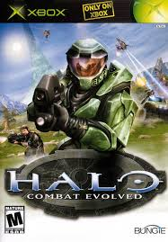
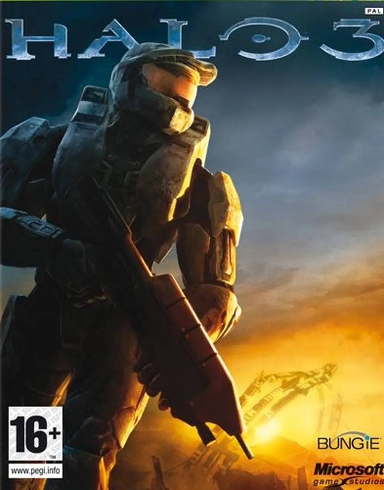
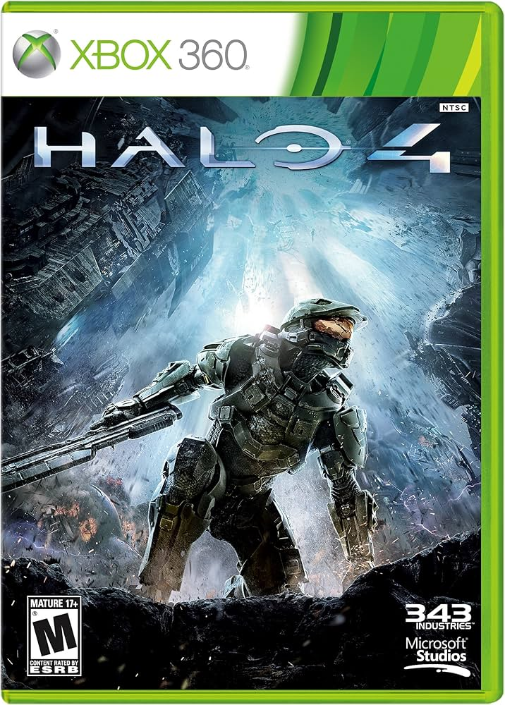

Halo Universe
Dicho universo se sitúa aproximadamente 500 años en el futuro, la raza humana ha colonizado varios planetas gracias al descubrimiento del viaje interlúminico en el siglo XXIII, pero también con la humanidad en una devastadora guerra contra una alianza alienígena conocida como el Covenant, con una ideología sobre unos anillos; construidos por una antigua raza extraterrestre conocida como los Forerunner, que al ser activados comenzaría el Gran Viaje cuando en realidad, toda la vida en la galaxia seria destruida. HAlo CE: Combat evolved  Halo 2 
Halo 3  Halo 3 ODST 
Halo Reach 
Halo 4  Halo 5 Guardians 
Halo Infinite 
|